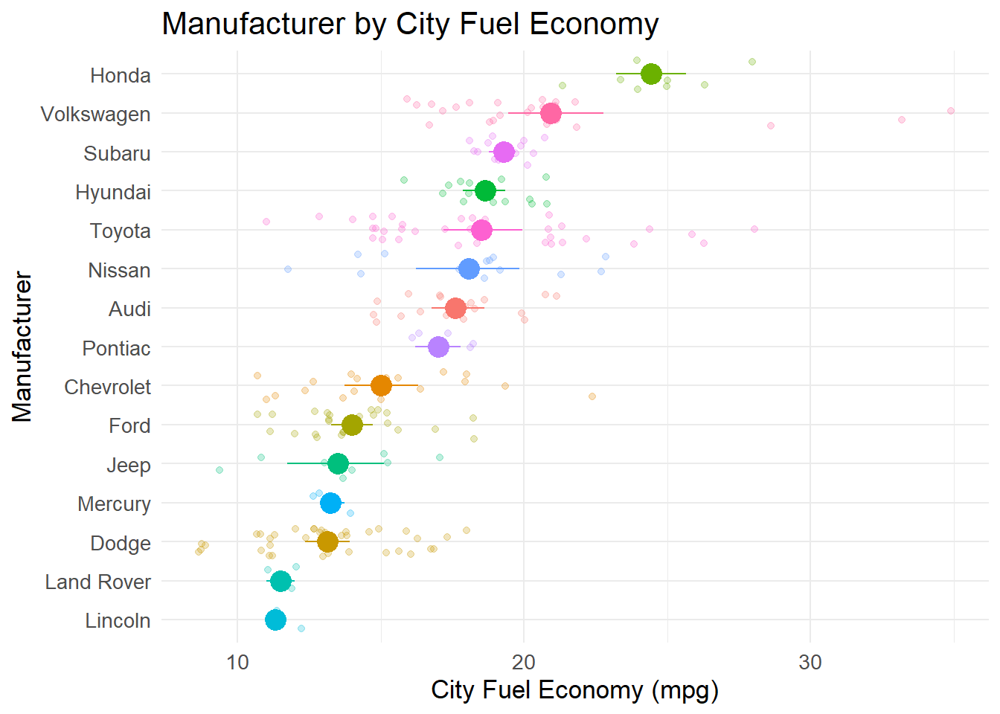
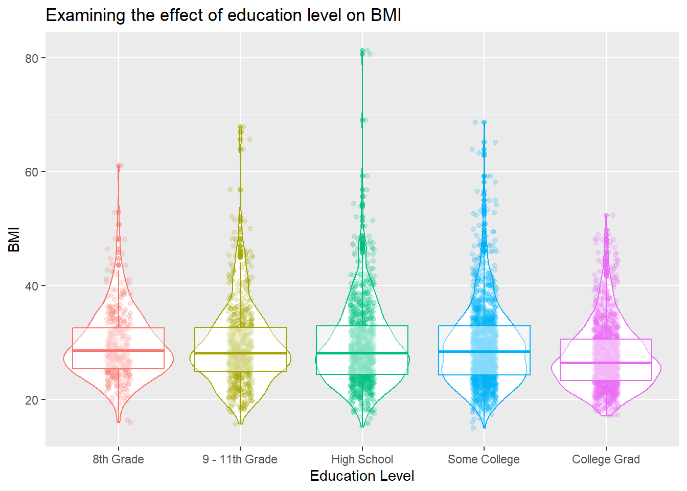

Chapter 4 数据可视化
概述
能够构建清晰的可视化是将数据成功传达给目标受众的关键。
最近有几本专注于数据可视化的优秀书籍，我建议您看一下。 它们都提供了关于数据可视化的精彩视角，并且充满了不同类型的数据可视化的精彩示例，您将在本次研讨会中学习如何构建其中一些示例。
如果您单击 Claus Wilke 书的图像，您将看到该书的在线版本（显然是用 R 编写的！）


首先，我希望您观看这个简短的视频，其中我给出了一些可以在 R 中构建的数据可视化类型的示例，以及为什么您可能希望避免构建条形图。
ggplot2 的基础知识
首先我们需要加载 ggplot2 包。 由于它是 Tidyverse 的一部分（并且我们可能会与 ggplot2 一起使用其他 Tidyverse 包），因此我们使用library(tidyverse)代码行将其加载到我们的库中。
在视频中，我提到使用 ggplot2 需要我们指定一些核心信息才能构建可视化。 其中包括要绘制的原始数据、表示数据的几何形状的几何图形（或几何图形）以及几何图形和对象的美观性，例如颜色、大小、形状和位置。
你的第一次可视化
下面是一个示例，我们使用mpg数据集（这是一个包含汽车信息的数据集）来构建可视化，在 y 轴上绘制与城市燃油经济性 ( cty ) 相对应的点，在 x 轴上绘制与manufacturer相对应的点轴。
所以，这不太好。 x 轴标签很难阅读，而且各个点看起来也不那么令人愉悦。 我们可以使用str_to_title()函数将制造商标签更改为标题大小写，并使用theme()函数轻松调整轴标签。 请注意， ggplot()代码行之间的+符号相当于%>%运算符。 由于历史原因（基本上，因为ggplot()出现在 Tidyverse 中的其他包之前），在向ggplot()可视化添加图层时需要使用+ 。
mpg %>%
mutate(manufacturer = str_to_title(manufacturer)) %>%
ggplot(aes(x = manufacturer, y = cty)) +
geom_point() +
theme(axis.text.x = element_text(angle = 45, vjust = 0.5, hjust = .5))改善图表
因此，让我们做一些更多的整理工作 - 我们将使用geom_jitter()函数稍微抖动点（这样它们就不会垂直堆叠），并使用labs()函数整理轴标题以显式添加轴标签（而不仅仅是使用我们数据集中的标签）。 我们还添加了一些其他调整 - 你能发现它们吗？
mpg %>%
mutate(manufacturer = str_to_title(manufacturer)) %>%
ggplot(aes(x = manufacturer, y = cty)) +
geom_jitter(width = .2, alpha = .75, size = 2) +
theme_minimal() +
theme(axis.text.x = element_text(angle = 45, vjust = 0.5, hjust = .5)) +
theme(text = element_text(size = 13)) +
labs(title = "City Fuel Economy by Car Manufacturer",
x = "Manufacturer",
y = "City Fuel Economy (mpg)")添加汇总统计信息可能会对我们有所帮助，例如每个汽车制造商的平均燃油经济性和平均值的置信区间。
添加摘要统计数据
我们需要添加Hmisc包以允许我们使用stat_summary()函数。
mpg %>%
mutate(manufacturer = str_to_title(manufacturer)) %>%
ggplot(aes(x = manufacturer, y = cty)) +
stat_summary(fun.data = mean_cl_boot, colour = "black", size = 1) +
theme_minimal() +
theme(axis.text.x = element_text(angle = 45, vjust = 0.5, hjust = .5)) +
theme(text = element_text(size = 13)) +
labs(title = "City Fuel Economy by Car Manufacturer",
x = "Manufacturer",
y = "City Fuel Economy (mpg)")完成的（？）图表
目前，x 轴按字母顺序排序。 我们重新排序它怎么样，以便它从平均燃油经济性最高的制造商到最低的制造商。 另外，我们翻转可视化以便交换轴并添加一些其他调整怎么样？
mpg %>%
mutate(manufacturer = str_to_title(manufacturer)) %>%
ggplot(aes(x = fct_reorder(manufacturer, .fun = mean, cty), y = cty, colour = manufacturer)) +
stat_summary(fun.data = mean_cl_boot, size = 1) +
geom_jitter(alpha = .25) +
theme_minimal() +
theme(text = element_text(size = 13)) +
labs(title = "Manufacturer by City Fuel Economy",
x = "Manufacturer",
y = "City Fuel Economy (mpg)") +
guides(colour = 'none') +
coord_flip()
这看起来很不错。 你能说出我添加的其他代码的作用吗？ 尝试更改一些数字，看看会发生什么。 您可以通过在某行代码前面添加#来阻止该行代码运行。 因此，如果您需要暂时不运行某行，只需添加#而不是删除该行。
作图很少会完全“完成”，因为您经常会想到可能会做出一些改进的细微美学调整。
使用facet_wrap()
我们可能认为燃油经济性随着车辆类型（例如，跑车可能比中型汽车更耗油）和发动机数量大小（例如，具有更大发动机的汽车可能更耗油）而变化。 在下面的可视化中，我们将使用facet_wrap()函数为我们要分面的因素的每个级别构建单独的可视化（忽略 SUV）。
mpg %>%
filter(class != "suv") %>%
mutate(class = str_to_title(class)) %>%
ggplot(aes(x = displ, y = cty, colour = class)) +
geom_jitter(width = .2) +
theme_minimal() +
theme(text = element_text(size = 13)) +
labs(title = "City Fuel Economy by Engine Displacement",
x = "Engine Displacement (litres)",
y = "City Fuel Economy (mpg)") +
guides(colour = 'none') +
facet_wrap(~ class)你能说出每段代码在做什么吗？ 再次编辑数字并在要暂时忽略的行前添加# ，看看会发生什么。
散点图
上面我们重点在一个轴上绘制数值变量，在另一轴上绘制分类变量。 在某些情况下，我们想要创建散点图，使我们能够绘制两个数值变量的相互关系 - 可能是为了确定两者之间是否存在关系。 下面我们在 y 轴上绘制发动机排量，在 x 轴上绘制城市燃油经济性。
mpg %>%
mutate(class = str_to_upper(class)) %>%
ggplot(aes(x = cty, y = displ)) +
geom_point(aes(colour = class)) +
geom_smooth(se = FALSE) +
theme(text = element_text(size = 13)) +
theme_minimal() +
labs(x = "City Fuel Economy (mpg)",
y = "Engine Displacement (litres)",
colour = "Vehicle Class")在上面的示例中，我们使用geom_smooth()函数添加一个对应于将曲线拟合到数据的图层。 我们可以看到，对于小于 25 英里/加仑的燃油经济性值，发动机排量和燃油经济性之间存在相当明显的负相关性，但对于大于 25 英里/加仑的值，两者之间几乎没有关系。 这些似乎表明，有些发动机相对较小的汽车具有很好的燃油经济性，而其他具有类似发动机尺寸的汽车的燃油经济性要差得多。
绘制直方图
我们可能想要绘制发动机尺寸的直方图（以升为单位测量并在mpg数据集中的变量displ中捕获）以了解该变量的分布情况。
mpg %>%
ggplot(aes(x = displ)) +
geom_histogram(binwidth = .5, fill = "grey") +
labs(title = "Histogram of Engine Displacement",
x = "Engine Displacement (litres)",
y = "Count")ggridges 包
鉴于在之前的可视化中，我们看到车辆类别之间似乎存在差异，如果我们能够比较按车辆类别划分的发动机尺寸的分布，不是很好吗？ 我们现在将使用ggridges()包来做到这一点……
mpg %>%
mutate(class = str_to_title(class)) %>%
ggplot(aes(x = displ, y = fct_reorder(class, .fun = mean, displ))) +
geom_density_ridges(height = .5, aes(fill = class)) +
theme_minimal() +
theme(text = element_text(size = 13)) +
guides(fill = 'none') +
labs(x = "Engine Displacement (litres)",
y = NULL)NHANES 数据集
我们现在将可视化 NHANES 数据集的各个方面。
这是美国国家健康统计中心（NCHS）收集的调查数据，该中心自 1960 年代初以来进行了一系列健康和营养调查。 自 1999 年以来，每年约有 5,000 名各个年龄段的人在家中接受采访，并完成调查的健康检查部分。 健康检查在移动检查中心（MEC）进行。 NHANES 的目标人群是“美国的非制度化平民居民人口”。 NHANES（美国国家健康和营养检查调查）使用复杂的调查设计（参见 http://www.cdc.gov/nchs/data/series/sr_02/sr02_162.pdf），对某些亚群体（如少数族裔）进行过度抽样。 对原始 NHANES 数据的简单分析可能会导致错误的结论。 例如，数据中每个种族群体的人口百分比与他们在人口中的百分比有很大不同。
我们需要加载NHANES包，因为这是包含数据集的地方。
如果运行上述命令时出现错误，是因为您还没有使用install.packages("NHANES")在您的计算机上安装该软件包吗？
首先，我们将探索 NHANES 数据集。
## [1] 76## [1] 10000我们看到有 76 列和 10,000 行。 如果我们使用函数head()我们可以看到数据帧的前几行。
## # A tibble: 6 × 76
## ID SurveyYr Gender Age AgeDecade AgeMonths Race1 Race3 Education
## <int> <fct> <fct> <int> <fct> <int> <fct> <fct> <fct>
## 1 51624 2009_10 male 34 " 30-39" 409 White <NA> High School
## 2 51624 2009_10 male 34 " 30-39" 409 White <NA> High School
## 3 51624 2009_10 male 34 " 30-39" 409 White <NA> High School
## 4 51625 2009_10 male 4 " 0-9" 49 Other <NA> <NA>
## 5 51630 2009_10 female 49 " 40-49" 596 White <NA> Some College
## 6 51638 2009_10 male 9 " 0-9" 115 White <NA> <NA>
## # ℹ 67 more variables: MaritalStatus <fct>, HHIncome <fct>, HHIncomeMid <int>,
## # Poverty <dbl>, HomeRooms <int>, HomeOwn <fct>, Work <fct>, Weight <dbl>,
## # Length <dbl>, HeadCirc <dbl>, Height <dbl>, BMI <dbl>,
## # BMICatUnder20yrs <fct>, BMI_WHO <fct>, Pulse <int>, BPSysAve <int>,
## # BPDiaAve <int>, BPSys1 <int>, BPDia1 <int>, BPSys2 <int>, BPDia2 <int>,
## # BPSys3 <int>, BPDia3 <int>, Testosterone <dbl>, DirectChol <dbl>,
## # TotChol <dbl>, UrineVol1 <int>, UrineFlow1 <dbl>, UrineVol2 <int>, …整理数据
看起来有一些参与者在数据集中出现了多次 - 这可能是由于描述中提到的过采样 - 前几行都是参与者ID 51624的数据。我们可以使用select()函数和n_distinct()函数来告诉我们数据集中唯一ID的数量。
## [1] 6779我们看到我们有6,779个独特的个体。让我们整理我们的数据，以删除重复的ID。请注意，下面我们使用了管道运算符%>%，你可以将其理解为’然后’，所以它意味着我们正在使用NHANES数据集，然后筛选出具有不同ID号码的行。管道运算符确实有助于提高数据整理代码的可读性，并且是整洁宇宙哲学的重要组成部分-整洁数据和整洁代码。
## [1] 76## [1] 6779好的，所以我们整理好的数据集被赋给了变量NHANES_tidied，并且有6,779行（但仍然有76列）- 这是我们预期的，因为我们有6,779个独特的个体。
绘制直方图
让我们开始探索数据吧。我们有很多潜在的变量和关系可以探索。我看到我们有一个标记为教育的因子。我们还有与健康相关的信息，比如BMI - 首先让我们绘制一个BMI的直方图。
我们在这里看到一个相当向右倾斜的分布。请注意我们对na.rm参数的使用-这个参数在许多tidyverse函数中都出现，并且通过将其设置为TRUE，我们告诉R忽略数据框中任何存在缺失数据的部分（由NA表示）。
总结统计数据
BMI是否随教育水平的不同而变化？ 在下面的代码中，我们使用存储在变量NHANES_tidied中的数据，按教育水平进行分组，然后进行汇总，以生成每个组的中位数BMI。同样，这次我们使用na.rm = TRUE参数和summarise()函数来从计算中删除任何缺失值（NA）。
## # A tibble: 6 × 2
## Education median
## <fct> <dbl>
## 1 8th Grade 28.6
## 2 9 - 11th Grade 28.2
## 3 High School 28.2
## 4 Some College 28.4
## 5 College Grad 26.5
## 6 <NA> 18.9看起来受过大学教育的人具有最低的中位数BMI（忽略了NA类别，该类别对应于我们没有记录教育水平的情况）。
geom_violin()
让我们来画图吧！请注意，在这里我们会过滤掉没有记录BMI值的情况。函数is.na()在应用于缺失数据(NA)的情况下返回TRUE - 我们使用!运算符来否定这一点，并使用逻辑与运算符&将这些表达式组合在一起。
下面一行以filter()开头的代码意味着筛选出教育和BMI都不缺失的情况。这意味着传递给ggplot()函数的NHANES_tidied数据在我们感兴趣的关键变量上没有缺失数据。
然后我添加一个geom_violin()图层来捕捉每个教育水平的分布形状，并添加一个geom_boxplot()图层来为我们的教育因素创建一个箱线图。
调用guides(colour = 'none')会抑制显示颜色图例 - 在其前面加上#并重新运行代码以查看变化。
NHANES_tidied %>%
filter(!is.na(Education) & !is.na(BMI)) %>%
ggplot(aes(x = Education, y = BMI, colour = Education)) +
geom_violin() +
geom_jitter(alpha = .2, width = .1) +
geom_boxplot(alpha = .5) +
guides(colour = 'none') +
labs(title = "Examining the effect of education level on BMI",
x = "Education Level",
y = "BMI")
绘制交互效应
我们还可以绘制两个因素之间的相互作用。对于上面的图，我们将添加一个因素Diabetes（有两个水平 - Yes vs. No）来看看它如何与教育水平相互作用。为了捕捉这种相互作用的性质，我们在指定x轴美学时使用表达式Education:Diabetes。请注意，我已将x轴标签旋转45度以便更容易阅读。
NHANES_tidied %>%
filter(!is.na(Education) & !is.na(BMI) & !is.na(Diabetes)) %>%
ggplot(aes(x = Education:Diabetes, y = BMI, colour = Education)) +
geom_violin() +
geom_jitter(alpha = .2, width = .1) +
geom_boxplot(alpha = .5) +
guides(colour = 'none') +
theme(axis.text.x = element_text(angle = 45, vjust = 0.5)) +
labs(title = "Examining the effect of education level and diabetes on BMI",
x = "Education Level x Diabetes",
y = "BMI")我们可以从上面的图表看到，无论教育水平如何，患有糖尿病的人似乎也有更高的BMI得分。
使用facet_wrap()绘制直方图
我们还可以根据每个教育水平单独绘制BMI的直方图 - 我们使用facet_wrap()函数来实现这一点。
NHANES_tidied %>%
filter(!is.na(Education) & !is.na(BMI)) %>%
group_by(Education) %>%
ggplot(aes(x = BMI, fill = Education)) +
geom_histogram() +
guides(fill = 'none') +
labs(title = "Examining the effect of education level on BMI",
x = "BMI",
y = "Number of cases") +
facet_wrap(~ Education)在上面的图中，注意每个图使用相同的y轴刻度 - 这使得比较有点棘手，因为每个教育水平的案例数量不同。在facet_wrap()行的Education之后添加以下scales = "free"。有什么变化？
我们可以使用密度函数生成直方图，而不是使用计数。让我们还加上一个密度曲线。
NHANES_tidied %>%
filter(!is.na(Education) & !is.na(BMI)) %>%
group_by(Education) %>%
ggplot(aes(x = BMI, fill = Education)) +
geom_histogram(aes(y = ..density..)) +
geom_density(aes(y = ..density..)) +
guides(fill = 'none') +
labs( title = "Examining the effect of education level on BMI",
x = "BMI",
y = "Density") +
facet_wrap(~ Education)